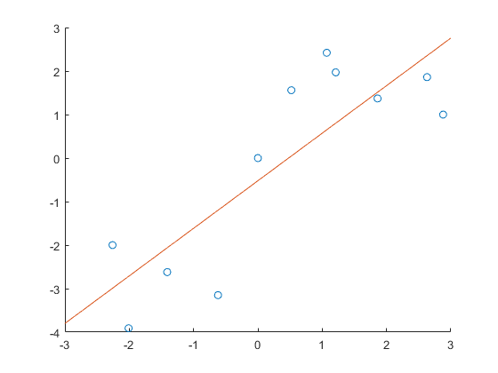
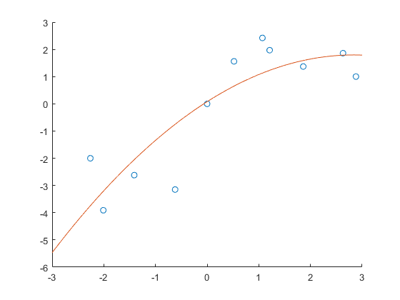

Contents
clear;
clc;
x_data = [-2.26 -2.01 -1.41 -0.62 0 0.52 1.07 1.21 1.86 2.63 2.88];
y_data = [-2.00 -3.91 -2.62 -3.15 0 1.56 2.42 1.97 1.37 1.86 1.00];
1. iv
figure("Name", "Linear Regression")
scatter(x_data, y_data)
hold on
x = -3 : 0.0001: 3;
linear_fit_func = -0.52090568 + 1.093013561*x;
plot(x, linear_fit_func)
hold off

1. v
figure("Name", "Quadratic Regression")
scatter(x_data, y_data)
hold on
x = -3 : 0.0001 : 3;
quadratic_fit_func = 0.078775724 + 1.209343393*x - 0.2130809*x.^2;
plot(x, quadratic_fit_func)
hold off

1. vi
A = [1 x_data(1);
1 x_data(2);
1 x_data(3);
1 x_data(4);
1 x_data(5);
1 x_data(6);
1 x_data(7);
1 x_data(8);
1 x_data(9);
1 x_data(10);
1 x_data(11)];
y = [y_data(1); y_data(2); y_data(3); y_data(4); y_data(5); y_data(6); y_data(7); y_data(8); y_data(9); y_data(10); y_data(11)];
a = inv(transpose(A) * A) * transpose(A) * y;
disp("a = ")
disp(a)
disp("Thus, the results are the same")
a =
-0.5209
1.0930
Thus, the results are the same
1. vii
A = [1 x_data(1) x_data(1).^2;
1 x_data(2) x_data(2).^2;
1 x_data(3) x_data(3).^2;
1 x_data(4) x_data(4).^2;
1 x_data(5) x_data(5).^2;
1 x_data(6) x_data(6).^2;
1 x_data(7) x_data(7).^2;
1 x_data(8) x_data(8).^2;
1 x_data(9) x_data(9).^2;
1 x_data(10) x_data(10).^2;
1 x_data(11) x_data(11).^2];
y = [y_data(1); y_data(2); y_data(3); y_data(4); y_data(5); y_data(6); y_data(7); y_data(8); y_data(9); y_data(10); y_data(11)];
a = inv(transpose(A) * A) * transpose(A) * y;
disp("a = ")
disp(a)
disp("Thus, the results are the same")
a =
0.0788
1.2093
-0.2131
Thus, the results are the same
2. a
lagrangeX = input("Input x values: ");
lagrangeY = input("Input y values: ");
coefficients = 0;
for i=1:length(lagrangeX)
p=1;
for j=1:length(lagrangeX)
if j~=i
c = poly(lagrangeX(j))/(lagrangeX(i)-lagrangeX(j));
p = conv(p,c);
end
end
term = p*lagrangeY(i);
coefficients = coefficients + term;
end
disp("The coefficients for the Lagrange Polynomials are:")
disp(coefficients);
Error using input
Cannot call INPUT from EVALC.
Error in MAT202E_HW3 (line 67)
lagrangeX = input("Input x values: ");
2. c
x_data = [-4 -3.7 -3.2 -3.1 -2.9 -2.6 -1.8 -1 -0.2 0 0.8 1.3 1.8 2.4 3 3.2 3.78 4 4.22 4.66 5];
y_data = [-4.12 3.68 -6.12 -10.21 -8.15 5.62 0.25 8.62 -9.12 13.44 -2.96 -3.24 -8.98 1.22 5.86 15.62 8.88 -11.61 -4.76 3.52 6.11];
A = [1 x_data(1);
1 x_data(2);
1 x_data(3);
1 x_data(4);
1 x_data(5);
1 x_data(6);
1 x_data(7);
1 x_data(8);
1 x_data(9);
1 x_data(10);
1 x_data(11);
1 x_data(12);
1 x_data(13);
1 x_data(14);
1 x_data(15);
1 x_data(16);
1 x_data(17);
1 x_data(18);
1 x_data(19);
1 x_data(20);
1 x_data(21)];
y = [y_data(1); y_data(2); y_data(3); y_data(4); y_data(5); y_data(6); y_data(7); y_data(8); y_data(9); y_data(10);
y_data(11); y_data(12); y_data(13); y_data(14); y_data(15); y_data(16); y_data(17); y_data(18); y_data(19); y_data(20); y_data(21)];
a = inv(transpose(A) * A) * transpose(A) * y;
linear_fit = a(1) + a(2) * x;
figure("Name", "Linear Regression for 2. c)")
scatter(x_data, y_data)
hold on
x = -5 : 0.0001: 6;
plot(x, linear_fit)
hold off